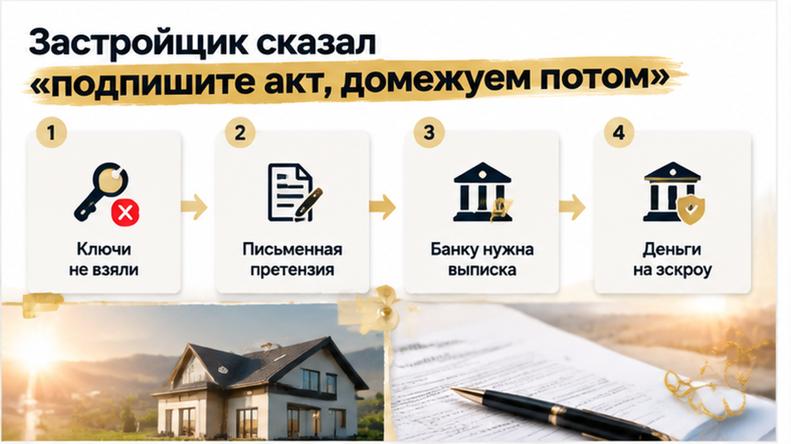
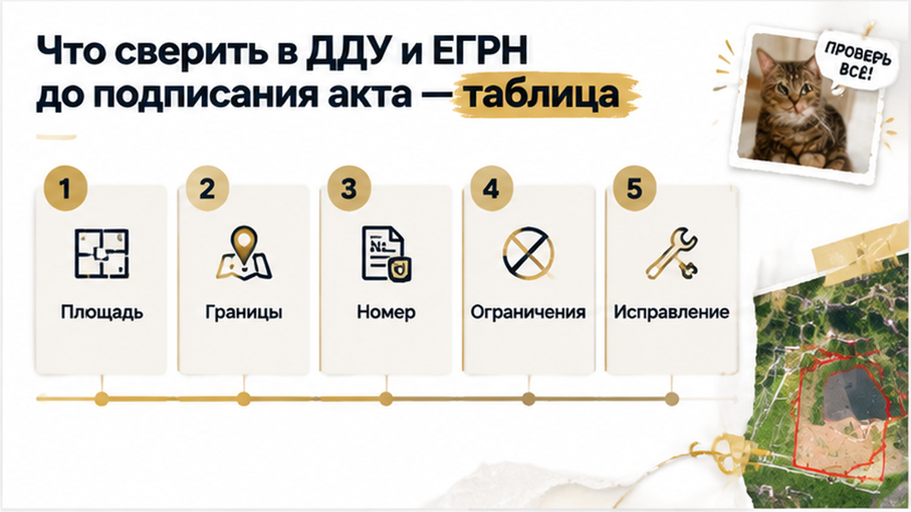

В день приёмки семья осталась без ключей. Не потому, что передумала покупать дом. Подписывать акт в обмен на «домежуем потом» она не стала: сначала устранение расхождения, потом передача.
Но пауза — ещё не решение. Я бы направил застройщику письменную претензию: что обещано в приложении к ДДУ, что указано в ЕГРН и какое несоответствие нужно устранить. Дальше — оценка требований по документам: привести участок в соответствие, уменьшить цену или расторгнуть договор. Это не три кнопки с гарантированным результатом. Для каждого варианта нужны основания.
Банку — приложение к договору и выписку по земле с пояснением расхождения. Возможна дополнительная проверка, но автоматической остановки транша обещать нельзя: всё зависит от условий сделки. Одобрение ипотеки не заменяет проверку документов — об этом мой разбор истории со строкой в ЕГРН, которая помешала регистрации.
И деньги на эскроу не возвращаются просто по просьбе покупателя. При расторжении возврат связан с регистрацией расторжения. Почему документы, банк и эскроу нужно рассматривать вместе, рассказывал в истории, где застройщик сменил юрлицо и прислал новый ДДУ. Здесь итог пока другой: семья остановилась до ключей, а вопрос с землёй остался открытым.
Подписывать ли акт приёмки дома, если застройщик обещает позже уточнить межевание, или требовать устранения расхождения до получения ключей?

| Что проверяем | Что кладём рядом | Какой вопрос задаём |
|---|---|---|
| Площадь земли | Приложение к ДДУ и выписку ЕГРН по участку | Почему площадь отличается и как застройщик собирается исполнить договор? |
| Расположение границ | План из договора, сведения ЕГРН и положение ограждения на месте | Где именно расхождение и какие документы объясняют его причину? |
| Номер участка и вид права | Сведения ДДУ и выписку | Тот ли участок передают вместе с домом и на тех ли условиях? |
| Использование и ограничения | ВРИ, обременения, сведения о зонах с особыми условиями использования и сервитутах | Что может ограничить использование земли после покупки? |
| Порядок исправления | Письменный ответ застройщика и документы кадастрового инженера | Кто готовит межевой план, нужны ли согласования с соседями и какой срок указан письменно? |
Обычный покупатель смотрит: дом готов, можно переезжать. Я как личный риэлтор сначала проверяю: передают ли человеку именно то, за что он платит. До подписания акта отметьте расхождения в документах и запросите письменное объяснение, порядок исправления и сроки. Устное обещание не заменяет этот ответ, а отсутствие подписи не заменяет претензию.
Семья не исправила границу одним отказом от ключей. Зато не закрыла приёмку в надежде, что всё решится само. Это и есть полезная остановка: не паниковать, а понять, чего требовать, у кого и на основании каких документов.